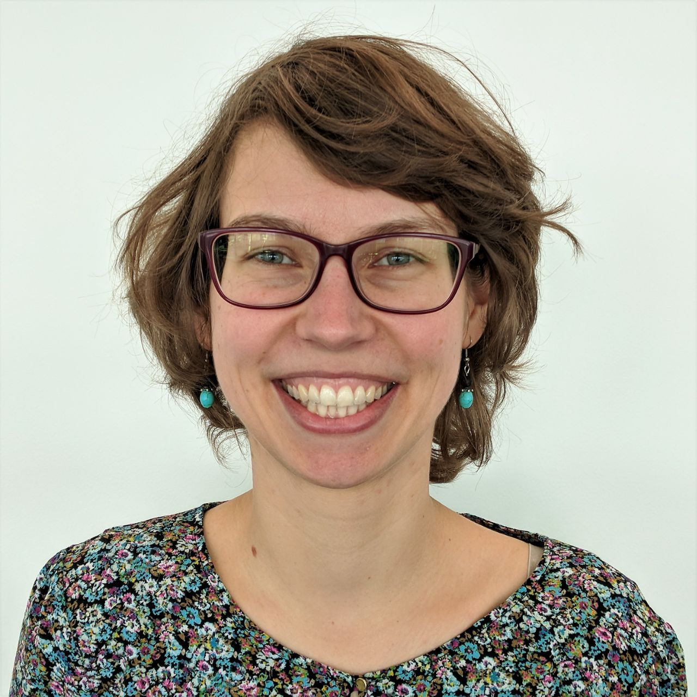

I am a F.R.S.-FNRS Research Associate at the University of Liège. My lab focusses on dendritic processing in a major sensory-motor hub, the superior colliculus.Previously, I worked as a postdoctoral fellow at the Neural Circuits of Vision group of Karl Farrow (NERF, KU Leuven, Belgium) driven to understand the circuit and coding principles that allow efficient parsing of sensory information and context in the early visual system. After my degree in theoretical physics (Leipzig University, Germany), I pursued a PhD in the lab of Tim Gollisch (University Medical Center Göttingen, Germany), where I investigated the multiplexed spike codes of retinal ganglion cells to unveil how information about specific visual features can be recovered from their joint activity. In the Farrow lab, I use viral tracing, multiphoton imaging and computational models to further our understanding of sensory coding along pathways that drive innate orienting behaviours. I investigate the filtering of sensory information in the superior colliculus at three levels; looking at the spatial distribution of visual information arriving from retinal axons; identifying how genetically identified neurons integrate these inputs along their dendrites; and how feedforward visual information through specific output pathways of the colliculus is modified by brain-wide inputs. Marie-Curie Post-Doctoral Fellow (FeaGatSu, 2018-2020). FWO Senior Fellow (2020-2023).
